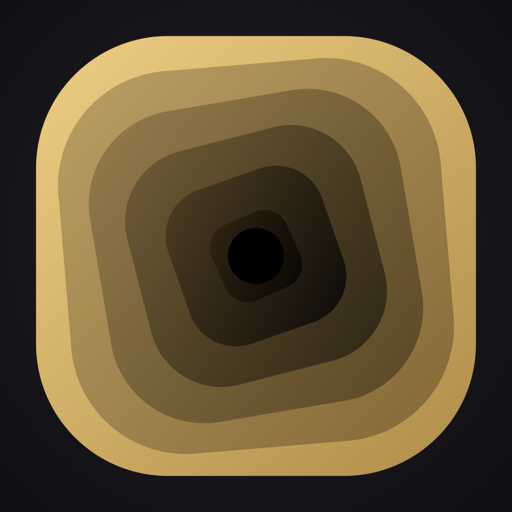
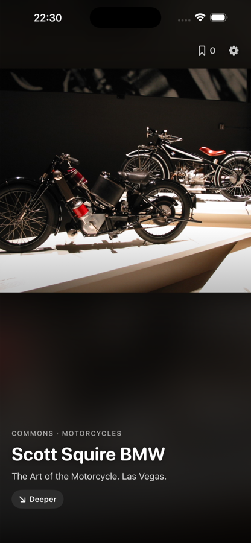
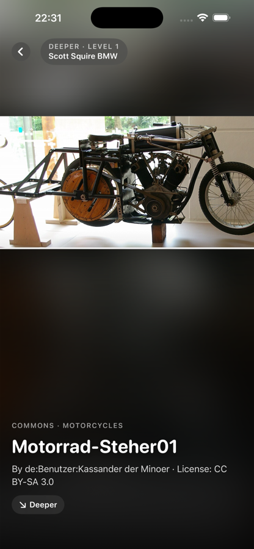

A calm feed of curious things.
Coming to the App StoreFull-screen cards from Wikipedia, the Met, NASA, iNaturalist, Open Library and Wikimedia Commons, picked by your interests: motorcycles, abandoned places, space, books, films, albums, today in the world, and more.
No likes, no comments, no notifications, no account, no ads. The feed stays partly random on purpose, so it never traps you. When something catches you, press Deeper and follow the thread as far down the hole as you like.


Rabbit Hole is an iOS app that shows a feed of content from public sources. It is built to collect nothing.
To show content, the app talks directly to public APIs: Wikipedia and Wikimedia Commons (Wikimedia Foundation), The Metropolitan Museum of Art, NASA (Astronomy Picture of the Day), iNaturalist and Open Library (Internet Archive). These services see your IP address and the request, as any website would. Their own privacy policies apply to those requests. Links you open from a card are shown in an in-app Safari view, which follows Safari's own privacy settings.
If you turn on “Places nearby” in Settings, the app asks for location access. Your location is used only on the device to pick a random spot within 200 km of you and to ask Wikipedia for articles around that spot. The coordinates sent to Wikipedia are of that random spot, not your exact position. The app never stores your location history and never sends it to the developer. You can turn the interest off or revoke the permission in iOS Settings at any time.
The app has no user-generated content and no social features, and is rated 4+.
Questions about this policy: contact.petrov@icloud.com
Questions or problems with the app? Open an issue at https://github.com/coding-froging/rabbithole-privacy/issues and I will answer there.